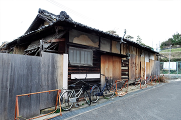

お電話の相談もお待ちしています！
TEL : 0120-876-279
電話に出られない場合は折り返しいたします
受付時間
9:00～18:00（不定休）

不動産売却にはいくつかの方法があり、不動産やお客様のご状況によって適した方法が異なります。こちらでは、その方法の一つ「仲介売却」について詳しくご紹介します。静岡市葵区のツナグ不動産事務所では不動産アドバイザーの代表がお話をうかがいますので、まずはお気軽にご相談ください。
なるべく「高く」売ることにこだわりたい方へ～仲介売却～
仲介売却とは？
不動産業者が売主様と買主様の間に入って、売買取引を成立させる方法です。売却される方の立場で考えるなら、「不動産業者に買い手を見つけてもらう」というイメージになります。買い手候補の方と売主様の条件のすり合わせ、内覧スケジュールの日時調整などはすべて不動産業者が行います。
仲介売却を不動産会業者に依頼するときは、「媒介契約」を締結します。媒介契約には3つの種類があり、詳細は「査定方法・媒介契約・諸経費について」のページでわかりやすくご紹介していますので、ぜひそちらも併せてご覧ください。
依頼を受けた不動産業者は、広告・インターネット・店頭での紹介といったさまざまな方法を駆使して不動産の購入者を探します。
売却までの流れ
まずは依頼先の不動産業者を決め、仲介売却を依頼します（媒介契約締結）。その後、購入希望者による内覧、売却金額や引っ越し時期などの条件のすり合わせを行い、双方納得の上で売買契約を締結。物件を引き渡し、売却完了となります。
依頼から売却完了までの期間はケースによって異なりますが、3～6ヶ月程度が一般的です。
仲介売却のメリット・デメリット
仲介売却の魅力は、不動産を納得できる価格で売却しやすいということです。売却までに時間をかけられるため、納得できる金額で売れるまでじっくり待つことができます。また、買主候補との条件交渉や内見の日程調整などを自ら行う必要がないため、気持ちの負担も軽減できるでしょう。
その一方で、買主が見つかるまでに時間がかかったり、条件のすり合わせが難航したりするケースもあります。高く売ることにこだわるあまり、「いつまでたっても売れない」という事態に陥る可能性も。時間をかけてじっくり売却できるのは仲介売却のメリットですが、それはデメリットにもなり得ます。
大切なのは、不動産やお客様の希望に合った方法を選ぶことです。ツナグ不動産事務所ではお客様のご都合やご要望、お気持ちを理解した上で適切なアドバイス・ご提案をしております。「ひとまず相談だけ」という方も大歓迎、無理な営業は絶対にいたしません。安心してお気軽にご相談ください。
TOPICS「相続不動産の売却」
親が亡くなり実家の土地・建物を相続することになったとき、以下のような問題が発生することがあります。
- 土地や建物を相続したものの、使い道がない
- 相続税の支払いが困難
- 複数の相続人で分割したいが、不動産のため分けることが難しい
不動産売却なら相続した物件を現金化できるため、こうした問題・お悩みの解消につながります。
TOPICS「空き家の売却」

不動産は所有しているだけで税金がかかります。また、空き家を放置していると、管理・維持費がかさむだけではなく、倒壊などのリスクも。空き家を売却することで、こういった負担を解消できます。
| 空き家を売却する方法 | |
|---|---|
| そのまま売却する | 解体し、更地にして売却する |
| 「中古戸建」として売却する場合はリフォーム費用、「古家付土地」の場合は解体などの費用がすべて買主負担となります。その分、売却価格が下がる傾向はありますが、コストをかけずに売却でき、手間も少ない方法です。 | 「古家付土地」よりも高く、早く売却できることが多いです。ただし、解体には費用がかかるため、解体費用と売却額のバランスをよく検討する必要があります。 |
| 空き家を売却する方法 |
|---|
| そのまま売却する |
| 「中古戸建」として売却する場合はリフォーム費用、「古家付土地」の場合は解体などの費用がすべて買主負担となります。その分、売却価格が下がる傾向はありますが、コストをかけずに売却でき、手間も少ない方法です。 |
| 解体し、更地にして売却する |
| 「古家付土地」よりも高く、早く売却できることが多いです。ただし、解体には費用がかかるため、解体費用と売却額のバランスをよく検討する必要があります。 |
空き家売却時の特別控除について
空き家の売却金額が、そのまま売却益となるわけではありません。実際の売却益は、売却価格から「建物の取得費用（減価償却も加味）」「譲渡所得にかかる税金」を差し引いた金額です。
実は、相続した実家などを売却する場合は、この譲渡所得について3,000万円の特別控除を受けられる可能性があります。空き家を売却する際は、この特別控除が適用されるかどうかを事前に確認しておきましょう。適用条件などの詳細をお知りになりたい場合は、お気軽に当事務所までお問い合わせください。
住宅ローンの滞納でお困りではありませんか？～任意売却～
任意売却とは？
住宅ローンを組んで購入した不動産には「抵当権」がつけられていて、もしローン返済が困難になって滞納が続くと、債権者は抵当権に従って不動産を差押えます。差押え物件を競売にかけ、その売却代金で資金を回収するのです。一旦競売にかけられた不動産は、所有者の意思とは無関係に売却されてしまいます。
「任意売却」は、こうして不動産が強制的に売られてしまう前に所有者の意思で不動産を売る方法です。競売にかけられると市場価格の3～5割ほどで売られてしまいますが、任意売却ならより市場価格に近い金額での売却が可能になります。
任意売却可能な期間には限りがあります
| 任意売却が可能 | ローン滞納前 | 返済は継続しているものの、資金繰りが厳しい状況に。早めの対策をおすすめします。 |
|---|---|---|
| ローン滞納3ヶ月以内 | ローン滞納が続き、金融機関からの督促状や一括弁済通知が届きはじめます。 | |
| ローン滞納4ヶ月以内 | 競売開始の通知が届きます。一般的なケースでは、通知から4～5ヶ月で競売がはじまります。 | |
| ローン滞納5ヶ月以上 | 裁判所から競売の執行官が来て、写真撮影などの調査を行います。また、不動産関係者が家を訪ねてくることもあります。 | |
| 任意売却できません | それ以降 | 競売開始、強制立ち退きとなります。ここまで来ると任意売却ができなくなるため、お早めにご相談ください。 |
| 任意売却が可能 | |
|---|---|
| ローン滞納前 | 返済は継続しているものの、資金繰りが厳しい状況に。早めの対策をおすすめします。 |
| ローン滞納3ヶ月以内 | ローン滞納が続き、金融機関からの督促状や一括弁済通知が届きはじめます。 |
| ローン滞納4ヶ月以内 | 競売開始の通知が届きます。一般的なケースでは、通知から4～5ヶ月で競売がはじまります。 |
| ローン滞納5ヶ月以上 | 裁判所から競売の執行官が来て、写真撮影などの調査を行います。また、不動産関係者が家を訪ねてくることもあります。 |
| 任意売却できません | |
| それ以降 | 競売開始、強制立ち退きとなります。ここまで来ると任意売却ができなくなるため、お早めにご相談ください。 |
お早めに相談を！
任意売却が可能な期間には限りがあるため、「ローンの支払いが困難になってきた」「督促状が届いた」といった場合は、早めの対応をおすすめします。場合によっては、裁判所から競売開始の通知が届いていても解決できる可能性があります。あきらめずに、ぜひ一度ご相談ください。大切な財産と新しい生活を守る方法について、適切なアドバイスをさせていただきます。
不動産売却メニュー